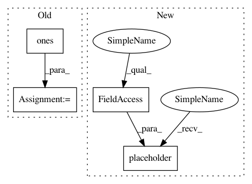

8160574230cfd9f3708a7594327e044704f3c6f2,examples/lm_comparisons/embedding_tied_language_model.py,,,#,97
Before Change
a, b, c = lm(text_ids, num_steps)
text_ids = tf.ones((16, 25), dtype=tf.int64)
num_steps = [15] * 16
a, b, c = lm(text_ids, num_steps)
After Change
a, b, c = lm(text_ids, num_steps)
inputs = tf.placeholder(dtype=tf.float32, shape=[None, None, 50])
length = tf.placeholder(dtype=tf.int32, shape=[None])
//
// decoder = tx.modules.BasicRNNDecoder(vocab_size=200)
// decoder(inputs=inputs,
// initial_state=decoder.zero_state(batch_size=)
In pattern: SUPERPATTERN
Frequency: 3
Non-data size: 4
Instances
Project Name: asyml/texar
Commit Name: 8160574230cfd9f3708a7594327e044704f3c6f2
Time: 2018-05-11
Author: tanbowen@sjtu.edu.cn
File Name: examples/lm_comparisons/embedding_tied_language_model.py
Class Name:
Method Name:
Project Name: asyml/texar
Commit Name: 8160574230cfd9f3708a7594327e044704f3c6f2
Time: 2018-05-11
Author: tanbowen@sjtu.edu.cn
File Name: examples/lm_comparisons/embedding_tied_language_model.py
Class Name:
Method Name:
Project Name: asyml/texar
Commit Name: f5a2b259b26bc173bf854cf5c8f306a1c21f15fe
Time: 2017-11-29
Author: 695742297@qq.com
File Name: txtgen/modules/networks_test.py
Class Name: FeedForwardNetworkTest
Method Name: test_feedforward
Project Name: tensorflow/models
Commit Name: b1a704d791a4524510e1c8bdb99f1a3c7907c9d1
Time: 2018-06-22
Author: 31663267+k-w-w@users.noreply.github.com
File Name: official/transformer/model/beam_search_test.py
Class Name: BeamSearchHelperTests
Method Name: test_shape_list